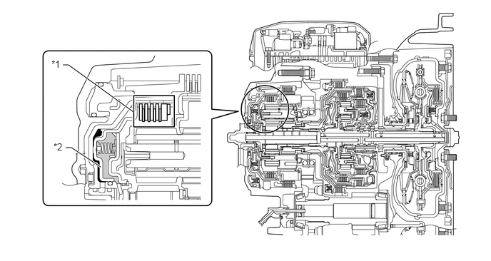
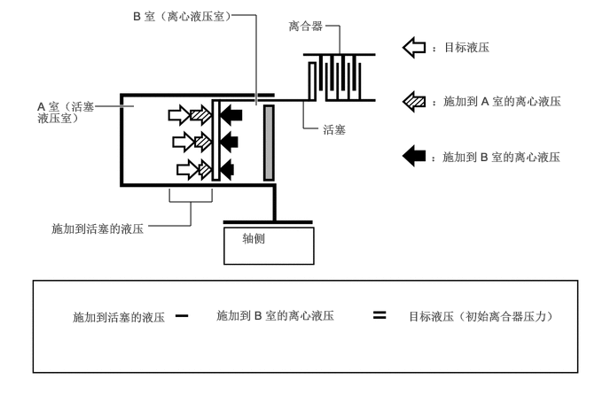

NM35K0CC
_52
传动系统
_079777
UB80E 自动变速器/传动桥
_0387096
自动传动桥系统
DE
详情
F
UB80E 自动变速器/传动桥 自动传动桥系统 详情 离心液压取消机构
构造
a.
由于以下原因，C1、C2、C3 和 C4 离合器采用离心液压取消机构。
b.
离合器换档操作不仅受阀体所控制的液压的影响，还受离合器活塞油压室（A 室）内存在油液的离心液压的影响。离心液压取消机构用 B 室来降低 A 室油液所造成的离心液压的影响。从而可以平稳地换档，并实现良好的换档响应性。

0.958,2.156 1.042,2.156
1.042,2.156 1.469,2.438
true
0.917,0.948 1,0.948
1,0.948 1.948,1.635
true
0.75,0.854 1.063,1.01
0.313,0.156
10
false
*1
0.781,2.063 1.094,2.219
0.313,0.156
10
false
*2
| *1 | C2 离合器 | *2 | 活塞 |

|
A 室 | 
|
B 室 |
c.
B 室加注供应至轴并用于其润滑的油。由于 B 室的加注，离心力使活塞两侧有相同的液压。这样由于离心力作用取消了活塞上的液压。因此，不必通过使用单向球排放油液，实现了高性能响应和平顺的换档特性。

3.823,0.302 3.99,0.302
3.99,0.302 3.99,0.635
false
3.74,1.51 3.563,1.51
3.563,1.51 3.563,1.177
false
2.719,0.177 3.01,0.177
3.01,0.177 3.01,1.24
true
1.115,1.25 1.573,1.25
true
2.49,2.219 2.49,2.375
2.49,2.375 1.99,2.375
false
1.99,2.375 1.99,2.219
false
1.74,2.656 2.24,2.656
2.24,2.656 2.24,2.375
false
4.792,3.635 6.594,4.385
1.792,0.74
10
false
目标液压（初始离合器压力）
2.542,3.625 4.073,4.406
1.521,0.771
10
false
施加到 B 室的离心液压
5.063,1.76 6.75,2.438
1.677,0.667
10
false
：施加到 B 室的离心液压
5.073,1.104 6.75,1.823
1.667,0.708
10
false
：施加到 A 室的离心液压
5.073,0.469 6.969,0.875
1.885,0.396
10
false
：目标液压
3.385,0.219 4.281,0.635
0.885,0.406
10
false
离合器
3.792,1.438 4.688,1.854
0.885,0.406
10
false
活塞
1.563,0.104 3.365,0.771
1.792,0.656
10
false
B 室（离心液压室）
0.438,1.167 1.167,1.688
0.719,0.51
10
false
A 室（活塞液压室）
0.604,2.604 2.031,3.198
1.417,0.583
10
false
施加到活塞的液压
2.844,2.719 3.875,3.135
1.021,0.406
10
false
轴侧
0.854,3.646 2.26,4.385
1.396,0.729
10
false
施加到活塞的液压